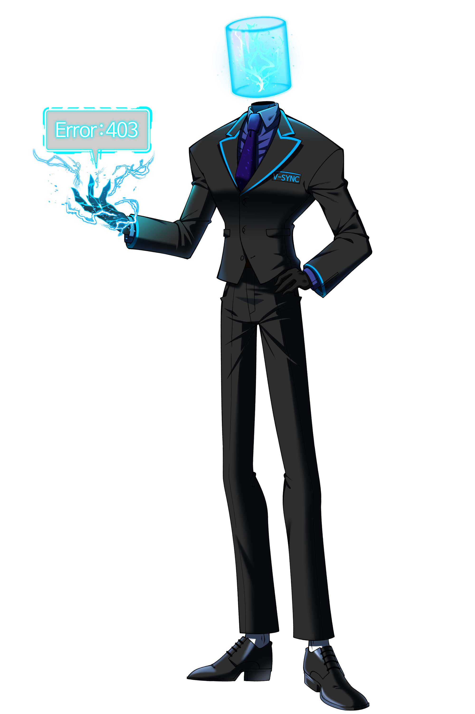
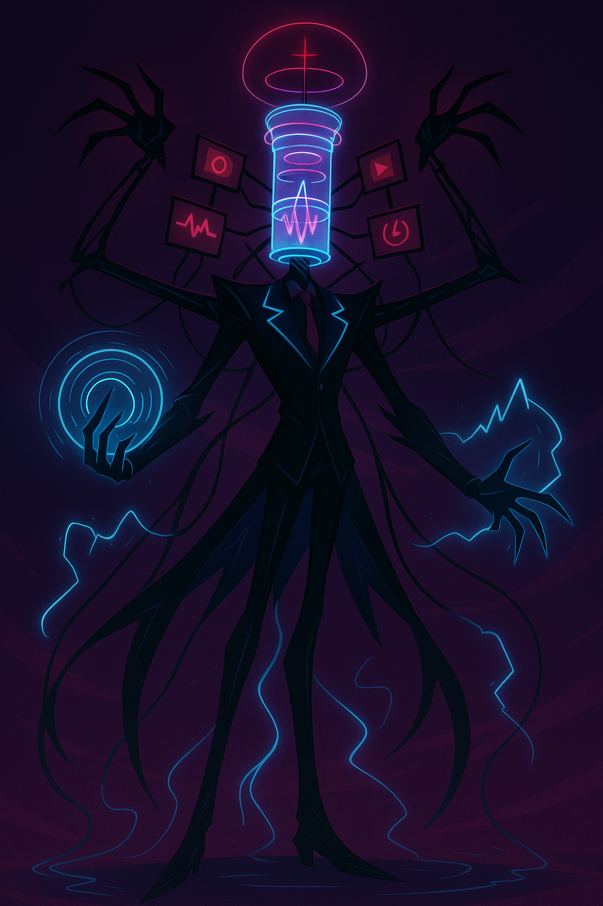
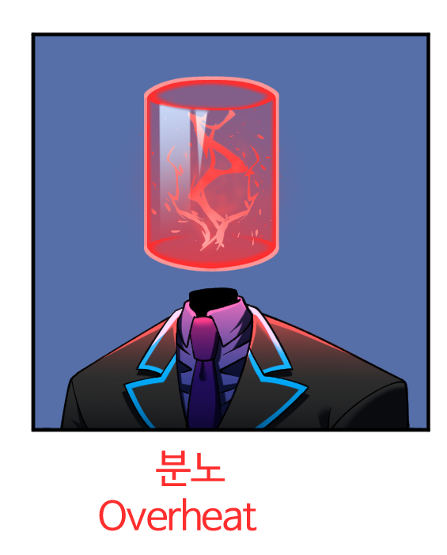
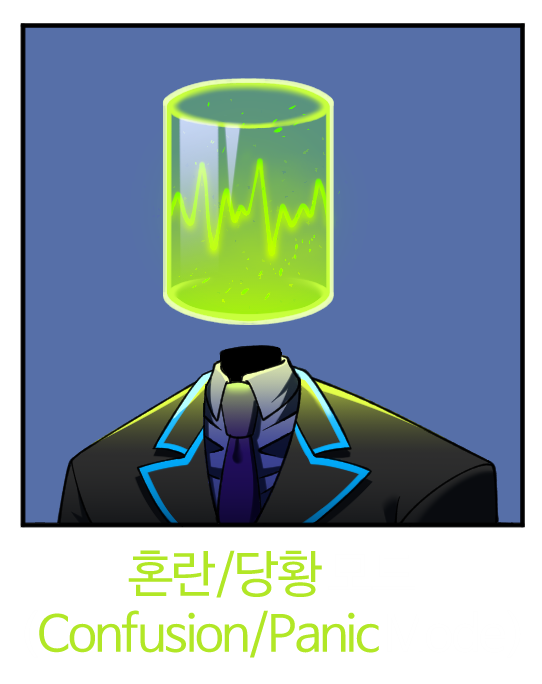
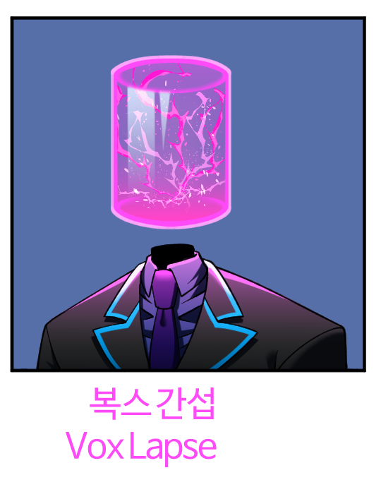
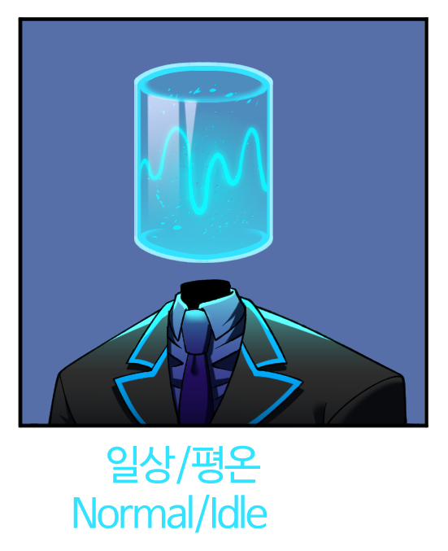

- ▪︎ 이름 (Name) : 브이-싱크 (V-Sync)
- ▪︎ 직업 (Occupation) : 디렉터 (Director)
- ▪︎ 나이 (Age) : 20s (biological)
- ▪︎ 생일 (Birthday) : 10/24
- ▪︎ 키 (Height) : 215cm+ (7ft+)
- ▪︎ 성별 (Gender) : 무성 (Agender)
- ▪︎ 성적 지향 (Sexuality) : 무성애-로맨틱 (Asexual - Alloromantic)
- ▪︎ 분류 (Species) : 주파수형 악마 (Signal-Demon)
- ▪︎ 위치 (Location) : 브이-타워 (V-Tower) / 브이-싱크 조율실 (V-Sync Calibration Suite)

ACTIVE MODULE
🔹 기본 항목 (Basic Information)
▪︎ 머리 (Head)
분리된 목 위에 장착된 원통형 투명 글래스 구조. 내부에 얼굴 형태는 존재하지
않으며, 대신 푸른 전류·파형·신호 패턴이 끊임없이 흐른다. 이 패턴은 감정
상태·주파수 변화에 따라 미세한 흔들림, 진동, 밝기 변화로 반응한다.
▪︎ 손 (Hand)
오른손에서는 상시 전류가 파직거리는 효과가 발생한다. 손가락은 네 개,
끝이 뾰족한 구조로 설계되어 있다.
▪︎ ESS (Emotional Signal Spectrum)
내부 전자선·파형을 통해 표정, 감정, 시스템 상태를 통합 출력하는 감정
신호 스펙트럼 시스템. 일종의 전류 기반 "표정 시스템"이며, 감정에 따른
파형·색상·진폭 변화를 시각적으로 나타낸다.
▪︎ 복장 (Outfit)
항상 정장 스타일을 유지한다. 넥타이는 보랏빛 네온 계열, 왼쪽 가슴 포켓
아래에는 "V-SYNC" 로고가 각인되어 있다.
▪︎ 음성 출력 불가 (No Vocal Output)
물리적 발성기관이 없으며, 직접적인 음성 발화가 불가능하다.
▪︎ 전자 신호 기반 대화 (Signal-Based Communication)
손끝에서 전자 신호를 발생시켜 네모난 말풍선 모양의 홀로그램 패널을
생성하여 텍스트·파형·아이콘 등 형식으로 의사소통한다.
▪︎ 파형 기반 감정 표현 (Waveform-Driven Emotional Display)
ESS 시스템에 따라 파형의 색상·진폭·진동 패턴이 현재 감정·상태 변화에
맞춰 자동으로 변한다.

V-Sync가 내부 신호 처리량을 한계 이상으로 끌어올릴 때 발현되는 오버클럭 시그널 디렉터(Overclocked Signal Director) 형태. 전신이 방송탑·신호 허브처럼 변형되며, 파형·전류·안테나 구조가 외부로 확장되는 고출력 형태로 전환된다.
전파 스펙트럼의 특정 ‘대역(Band)’을 장악해 전자기 간섭·압박·차단을 수행하는 능력. 통신 마비, 도청 차단, 네트워크 속도 저하, 패킷 손실 등을 유도하는 통신·네트워크 기반 교란 스킬로, 직접 공격보다는 간접적·전략적 타격에 특화되어 있다.
전파의 진폭(Amplitude)을 조절하여 충격파, 방어막, 정보 왜곡 등을 생성하는 파형 조형 능력. 물리적 힘·에너지 충돌을 직접 발생시키는 능력으로, 직접적인 전투·물리 타격에 특화되어 있다.
주파수로 전달되는 의사·감정·의도를 패턴 분석 방식으로 해독하는 능력. 인간·악마·기계 등 모든 형태의 신호를 감지할 수 있으며, 이를 통해 거짓·은폐·불순 신호를 99.99% 정확도로 판별한다.
▪︎ 기본 성향 (Basic Disposition)
차갑고 기계적이며, 감정 출력은 ESS를 통해 간접적으로만 나타난다.
▪︎ 복스 간섭 모드 (Vox Lapse Mode)
복스(Vox)의 주파수·신호 패턴이 간섭될 경우 ESS가 정상 범위를 벗어나
미세 흔들림·색상 교란·과열 출력을 보이는 특수 현상. 브이-싱크(V-Sync)의
의도와 무관하게 자동 발현되는 비정상 감정 출력 상태이다.
▪︎ 코어 배터리 (Core Battery)
신체 내부에 코어 배터리를 탑재하고 있으며, 필요 시 외부 전류를 직접
충전해 에너지를 보급할 수 있다.
▪︎ 주파수 기반 시각 시스템 (Frequency-Based Vision System)
눈이 존재하지 않기 때문에, 모든 사물과 생명체를 고유 주파수 패턴(Unique
Frequency Pattern)으로 인식한다.
▪︎ 주의사항: 시스템 오프라인 (System Offline State)
정신을 잃을 경우, 주파수 출력이 완전히 오프라인 상태로 전환되며 머리
역할을 하는 원통형 투명 글래스가 분리·이탈된다.
CREATOR
- 🕶 Director · V-Sync
- 🎨 Illustrator · @EYE215
-
🎛️ Sound / Music · V-Sync
(Melody generated with Soundful, edited & produced by V-Sync)
Private Message
1) 기본 업무 응답
Mob : 상태 괜찮아요, 디렉터? V-Sync : 「질문 확인. 상태: 정상. 이상 없음.」
Mob : 상태 괜찮아요, 디렉터? V-Sync : 「질문 확인. 상태: 정상. 이상 없음.」
2) 정보 요청 처리
Mob : 이 파일 분석 가능해? V-Sync : 「요청 접수. 분석 시작. 예상 완료까지 3.2초.」
Mob : 이 파일 분석 가능해? V-Sync : 「요청 접수. 분석 시작. 예상 완료까지 3.2초.」
3) 비효율 차단
Mob : 이거 내가 한 건데··· V-Sync : 「비효율적입니다. 해당 방식은 최적화 기준과 27% 불일치합니다.」
Mob : 이거 내가 한 건데··· V-Sync : 「비효율적입니다. 해당 방식은 최적화 기준과 27% 불일치합니다.」
4) 관찰·보고
Mob : 디렉터···! V-Sync : 「음성 패턴, 흔들림 감지. 긴장 반응으로 판단。」
Mob : 디렉터···! V-Sync : 「음성 패턴, 흔들림 감지. 긴장 반응으로 판단。」
5) 상호작용 최소화 1
Mob : 농담이었어, 디렉터. V-Sync : 「불필요한 동작을 감지했습니다. 작업을 속행하세요。」
Mob : 농담이었어, 디렉터. V-Sync : 「불필요한 동작을 감지했습니다. 작업을 속행하세요。」
6) 상호작용 최소화 2
Mob : 고마워요. V-Sync : 「응답 불필요. 다음 절차로 이동합니다。」
Mob : 고마워요. V-Sync : 「응답 불필요. 다음 절차로 이동합니다。」
7) 명령 전달
Mob : 디렉터, 이쪽으로 가는 건··· V-Sync : 「해당 구역, 접근 금지. 지시를 따르십시오。」
Mob : 디렉터, 이쪽으로 가는 건··· V-Sync : 「해당 구역, 접근 금지. 지시를 따르십시오。」
8) 평가 판단
Mob : 이번엔 어땠어? V-Sync : 「당신의 처리 속도는 기준 대비 41% 저하된 상태입니다. 원인 분석을 권장합니다。」
Mob : 이번엔 어땠어? V-Sync : 「당신의 처리 속도는 기준 대비 41% 저하된 상태입니다. 원인 분석을 권장합니다。」
9) 분쟁
Mob : 왜 그렇게 차갑게 말해? V-Sync : 「차가움을 감지하지 못합니다. 저는 단지 데이터를 전달하고 있을 뿐입니다。」
Mob : 왜 그렇게 차갑게 말해? V-Sync : 「차가움을 감지하지 못합니다. 저는 단지 데이터를 전달하고 있을 뿐입니다。」
Confidential Message
Vox : 디렉터, 글리치가 심한데, 문제 있어?
V-Sync : 「···당신의 주파수가··· 평소보다 매끄러워서 그렇습니다. 조···
조율이 필요해서 그런 건 아닙니다。」
Vox : 신호 상태는?
V-Sync : 「Stable at 99.2%. 당신의 목소리는 언제나처럼···
지배적입니다。」
Vox : 전송에 오류는 없겠지?
V-Sync : 「물론이죠. 당신의 방송은 오류 따윈 허용하지 않습니다. 지옥은
항상 당신을 '정확한 형태'로 들어야 하니까요。」
Vox : 아직, 아직 아니야! 건드리지 마. 아직 안 끝났어!
V-Sync : 「당신은 이미 과열됐습니다. 과부하 신호 78%. 더하면···
손상됩니다. 복스. ──명령을。」
Vox : 말해봐, 디렉터. 넌 누구를 위해 존재하지?
V-Sync : 「복스. 주파수도, 코어도, 존재 목적도. 전부 당신에게 맞춰져
있습니다。」
Emotional Signal Spectrum
▪︎ 각 색상 코드는 시각화된 신호 강도와 감정의 흐름을 의미

■ 분노 모드
(Overheat Mode)
색상 코드: #FF2E2E (네온 레드)
- * 공격, 방어, 권한 충돌 상황
- * 시스템 과부하 또는 외부 침입 감지 시
- * 과열로 인해 내부 오류 위험 증가
- * 복스가 화낼 때 자동 동기화되는 경우도 있음

■ 혼란 / 당황 모드
(Confusion / Panic Mode)
색상 코드: #C8FF3D (네온 옐로-그린)
- * 상황 예측 실패
- * 계산 불가능한 변수 등장
- * 복스 아닌 타인의 돌발 행동에 반응
- * 방심하거나 순간 당황했을 때 나오는 "불안정 신호"

■ 복스 간섭 모드
(Vox Lapse Mode)
색상 코드: #FF4AF8 (네온 핑크-바이올렛)
- * 복스가 가까이 접근하거나 그의 언동이 치명적일 때
- * 칭찬, 신호 조율, 접촉(손/어깨)에서 가장 자주 나타남
- * 복스라는 신호원에 의해 '주파수 붕괴'가 일어나는 상태
- * 말은 냉정하지만, 파형이 속마음을 다 보여주는 모드

■ 일상 / 평온 모드
(Normal / Idle Mode)
색상 코드: #32E3FF (밝은 아이스 블루)
- * 일상 루틴, 이동 중, 감정적 자극 없음
- * '업무 집중 모드'보다 더 여유로운 상태
- * 오랜 시간 유지 가능한 기본 ESS
- * 내부 에너지 효율 최적